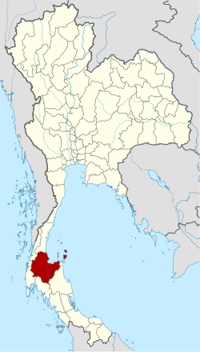

เเผนที่ของจังหวัดสุราษฎร์ธานี

จังหวัดสุราษฎร์ธานีตั้งอยู่ทาง ภาคใต้ของประเทศไทย บริเวณฝั่งตะวันออก ติดกับ อ่าวไทย มีพื้นที่ทั้งแผ่นดินใหญ่
และหมู่เกาะจำนวนมาก เช่น เกาะสมุย เกาะพะงัน และเกาะเต่าจำนวนอำเภอทั้งหมด: 19 อำเภอ แบ่งเป็น ตำบล 131 แห่ง และ หมู่บ้าน 1,028 หมู่บ้าน
จังหวัด สุราษฎร์ธานี มีประชากรประมาณ 1,076,666 คน ซึ่งจัดอยู่ในลำดับต้น ๆ ของจังหวัดภาคใต้ทั้งด้านจำนวนประชากรและพื้นที่ของจังหวัด